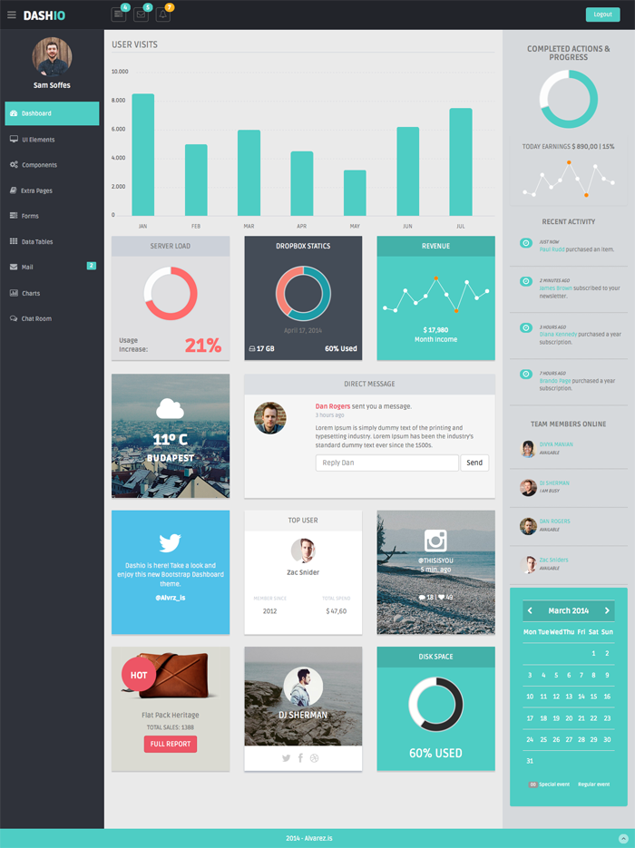
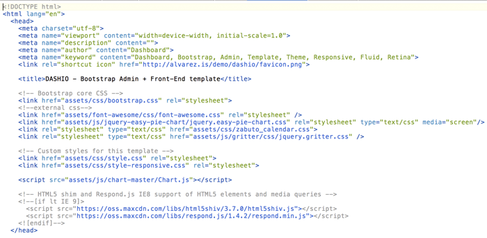
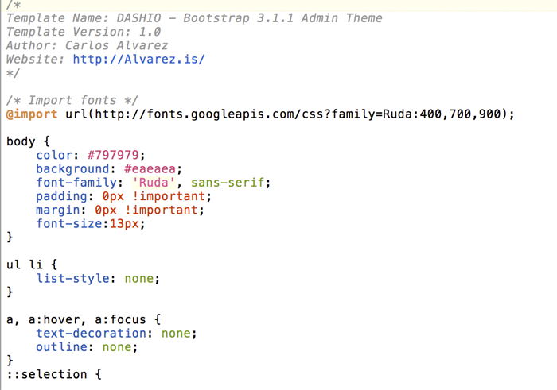
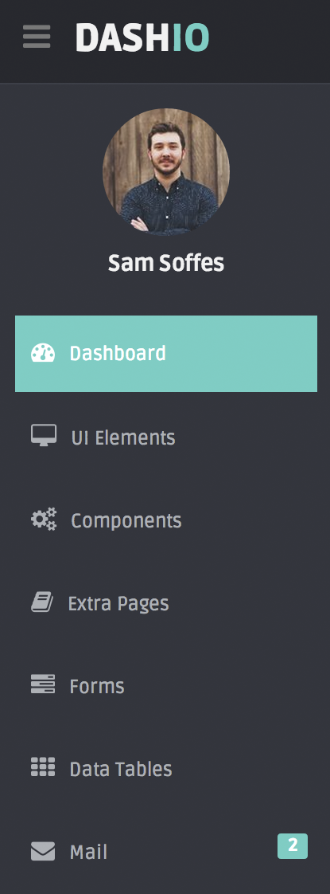
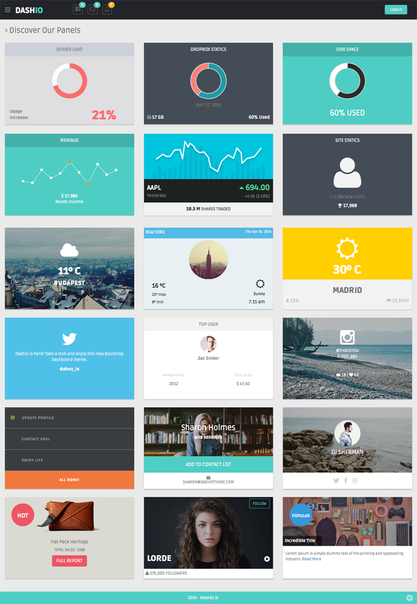
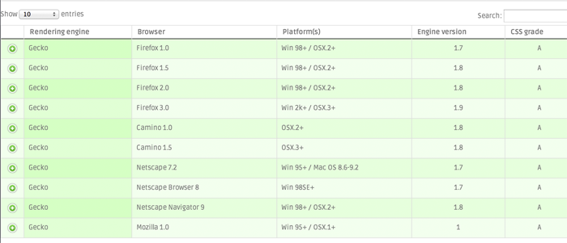
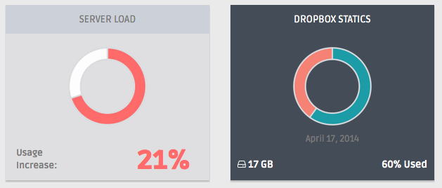
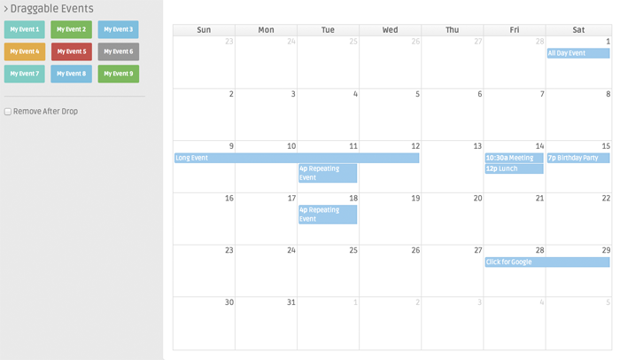
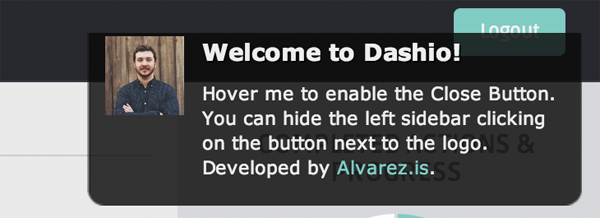

Dashio Admin Theme
This is the theme help documentation file. Contains some explanations of the scripts used by the dashboard, also, links to their sites and help forums. Please search this before contacting for support. Note I do not support theme customizations beyond it's original functionality & appearance.
Live Theme Demo1. Getting Started
A few words on getting started with your newest Bootstrap project, package files & theme support.
1.1 Included Files
After downloading the theme package open the folder named “DASHIO - Admin (Version)” and un-zip the folder, if it is not already so. Inside the package you will find the following files:
- Licensing
- Theme
- Documentation
1.2 Installation Options
To install your brand new Bootstrap theme (that you’ve already downloaded and un-packed) you have two primary options: FTP or Web Hosting Upload Tools. I strongly recommend to use the first option, because it's easier and more reliable.
1.3 FTP Upload
To manually upload your new Bootstrap theme, login with your credentials to your website and locate your desired folder in your host server. Upload the un-zipped theme folder into the: yourdomain.com/ or yourdomain.com/folder/
Please ensure you are uploading the un-zipped theme folder, not the entire package downloaded.
1.4 Theme Support
If you have a problem with the theme or found a bug please let me know by send me an email through carlos@alvarez.is and I will do what I can to assist you.
In order to submit me a Support Question, you will need to locate your Theme's Purchase Code, provided by the marketplace.
I tested the theme with major browsers and different devices. Unfortunately it is impossible to run every test scenario. I'll try to keep the theme as healthy as I can.
Note: I am happy to help with setup and any bugs you may stumble upon though I cannot support CSS modifications to your theme.
2. The Home Page
A quick overlook to understand the theme. HTML & CSS structure and files used.
2.1 Theme Design
This template is really simple to modify, so I am sure you won't have any problem to develop your site. All code is commented and indented to minimize your customization time.

The theme comes with a total of 37 HTMLs with their different structure and configuration.
2.2 HTML Structure Example

2.3 CSS Structure Example
Dashio uses 3 global CSS and one more added by Google Fonts. Major theme structure was defined using Bootstrap 3. Bootstrap.css file was not modified. Basic configuration changes were added to the Style.css file and Style-Responsive.css file. Depending on the scripts, the theme incorporates other CSS files to the correct function.

3. Theme Configuration
A quick guide to help you with the basic styles of your theme.
3.1 Google Fonts
This theme uses a pre-defined Google Fonts, 'Ruda'. If you want to change this value, you should take two steps. Replace the "@import" reference on the style.css file and second, replace all references of 'Ruda' with your new font there.

3.2 Menu
2 Menus are used on DASHIO. The top one is used as a notification bar. Top bar contains three alert buttons indicating new and pending tasks, and also includes a logout button.
The left sidebar, is the main menu of the theme. Contains links to all the pages of the site. By default is shown if the screen resolution is higher that 768px. If you want, you can toggle their view clicking the menu icon next to the logo.

The menu uses a set of scripts to proper transition, toggle and slide in (jquery.dcjqaccordion.2.7.js, jquery.scrollTo.min.js & jquery.nicescroll.js).
3.3 Font Awesome 4.0.3

Font Awesome gives you scalable vector icons that can instantly be customized — size, color, drop shadow, and anything that can be done with the power of CSS.
The theme uses font awesome in different parts of the code. Each part has their own configuration and styles. Please, refer to the next page to see the full list of icons available in this version and examples of use. FontAwesome.io.
3.4 Dashboard Panels

By default, Dashio comes with some panels configurations to show your data and information handsomely. The default panel comes with a height of 250px and is defined by the attribute (.pn) and the name of the panel. For example, the basic content is displayed in a panel called .Content-Panel. This defines the color, the font style, the headlines and more.
More panels and configurations will be added in future updates. You can request a specific design for a specific purpose and I will try to add that design in the next release.
4. The Javascript
List of javascripts used. Also a small configuration help for those ones that requires it.
4.1 List of Javascripts
- jquery.dataTables.js (Advanced Datatables Script)
- bootstrap-datepicker.js (Date Picker for Bootstrap)
- bootstrap-daterangepicker.js (Date Range Picker for Bootstrap)
- bootstrap-datetimepicker.js (Date/Time Picker for Bootstrap)
- bootstrap-fileupload.js (File Upload Script for Bootstrap)
- bootstrap-inputmask.min.js (Input Mod for Bootstrap)
- bootstrap-timepicker.js (Time Picker Only for Bootstrap)
- bootstrap-wysihtml5.js (Bootstrap Visual Text Editor)
- Chart.js (Master Chart JS Script)
- ckeditor.js (Inline Editor Script)
- dropzone.js (Dropzone File Upload)
- jquery.fancybox.js (Fancybox Script)
- jquery.fileupload.js (Multiple File Upload)
- jquery.flot.js (Flot Charts)
- jquery.fullcalendar.js (Full Calendar Script)
- maplace.js (Google Maps Script)
- gritter.js (Glow Notification Scripts)
- jquery.easy-pie-chart.js (Pie Chart Script)
- xcharts.min.js (xChart Script)
- advanced-form-components.js (Advanced Forms Script)
- bootstrap-switch.js (Switches Script)
- calendar-conf-events.js (FullCalendar Configuration File)
- chartjs-cont.js (ChartJs Configuration)
- common-scripts.js (Common Scripts to all pages)
- easy-pie-chart.js (Easy Pie Chart Configuration File)
- flotchart-conf.js (Flot Chart Configuration File)
- form-component.js (Basic Form Components)
- form-validation-script.js (Form Validation Script)
- gritter-conf.js (Gritter Configuration File)
- jquery.backstrech.min.js (Background Strech File)
- jquery.dcjqaccordion.2.7.js (Accordion Script)
- jquery.nicescroll.js (Nice Scroll Script)
- jquert.scrollTo.min.js (Scroll To Script)
- jquery.sparkline.js (Sparkline Charts Script)
- morris-conf.js (Morris Chart Configuration)
- sparkline.chart.js (Sparkline Configuration File)
- tasks.js (Task Lists Configuration)
- zabuto_calendar.js (Zabuto Calendar Script)
4.2 List of Javascripts - Main
- Bootstrap.min.js (All bootstrap scripts.)
- jquery.js (Main javascript file.)
- jquery-1.8.3.min.js (Main Javascript *old version for some scripts* )
- jquery-ui-1.9.2.custom.js (Jquery UI)
4.3 Advanced Data Tables

DataTables Script is a highly flexible tool, based upon the foundations of progressive enhancement, which will add advanced interaction controls to any HTML table.
Complete documentation, demos, helpers, faq and more can be found here: DataTables.net
4.4 Bootstrap Multiple File Uploader

File Upload widget with multiple file selection, drag&drop support, progress bars, validation and preview images, audio and video for jQuery.
Supports cross-domain, chunked and resumable file uploads and client-side image resizing. Works with any server-side platform (PHP, Python, Ruby on Rails, Java, Node.js, Go etc.) that supports standard HTML form file uploads.
Complete documentation, demos and information can be found here: Project Page
4.5 Chart JS

Chart JS is the main charts used in the dashboard. You can se a full example of the charts on the chartjs.html page.
The script uses 2 files. The first one is the main chart javascript file. The second one is the configuration script. This file contains the charts information, color, size and more. Please, examine both, the html and the configuration script to obtain a full understanding of the script. Also, you can read the complete documentation here: Chart JS
4.6 Morris, Flot & xCharts
The theme comes with 4 different scripts to show your data in the best way. Similar as chartjs, you can also use Morris, Flot & xCharts. All these script uses the same structure of chartjs. You will find an exclusive page with all the charts for each one. Each page contains the main JS file and a configuration file with the data and styles of each chart.
Morris Documentation: site
Flot Documentation: site
xCharts Documentation: site
4.7 Full Calendar Script

FullCalendar is a jQuery plugin that provides a full-sized, drag & drop calendar like the one below. It uses AJAX to fetch events on-the-fly for each month and is easily configured to use your own feed format (an extension is provided for Google Calendar).
It is visually customizable and exposes hooks for user-triggered events (like clicking or dragging an event).
Read full documentation here: Project Site.
4.8 Gritter - Notifications

Gritter is a small growl-like notification plugin for jQuery. You can, auto execute the script as you can see on the index.html file of the dashboard or use a triggered event, like the buttons in the general.html file.
Full documentation, examples and more, here: Site.
5. Files & Sources
To sum it all up, this is dedicated to the theme templates, image files and other sources / credentials for our theme.
5.1 PSD Sources
This theme does not includes a PSD file:
5.2 Image Credits
- Victor Von Salza - Link
- Lokesh Dahakar - Link
- Catskills Photography - Link
- Matthew Simantov - Link
- All other images provided by Unsplash.com - Link
- Product shots used for demo purposes only - Created by HardGraft.com
6. Thanks
And as always, I love to hear your feedback... so shoot me a tweet at @Alvrz_is and - if you want - register to my Newsletter.